FRC Journey
From VEX to FRC - competing with two Barker teams across regionals, Worlds, and Einstein.
2025–26 FRC REBUILT
Competition Journey & Portfolio
From VEX to FRC
Pre-Season
My transition from VEX Robotics to the FIRST Robotics Competition (FRC) marked a significant step up in the scale and complexity of my engineering experience.
Coming from VEX, I had experience with:
- Rapid prototyping
- Mechanical design
- CAD
- Robot strategy
- Competition-driven engineering
- Iterative testing and refinement
FRC allowed me to apply these skills to a much larger robot and team environment. Instead of working primarily on a single robot, I became part of a larger engineering organisation where mechanical design, manufacturing, programming, strategy, scouting, testing, and team coordination all had to work together.
This season was therefore more than a change in robotics platforms. It was a progression from designing and competing on my own robot to contributing within a larger engineering team.
Southern Cross Regional
8613 Barker Greybacks
My first major FRC competition of the 2025–26 REBUILT season was the Southern Cross Regional, competing with 8613 Barker Greybacks.
8613 finished 8th in qualification, with a 12–3 record, before being selected as the 1st pick of the #1 alliance.
My Role
- Mechanical Designer
- Level 3 Climber Prototyping
- Assembly, Manufacturing & Repair
- Drive Team Technician
Design Notes
CAD design work on the scoring mechanism ahead of the regional:
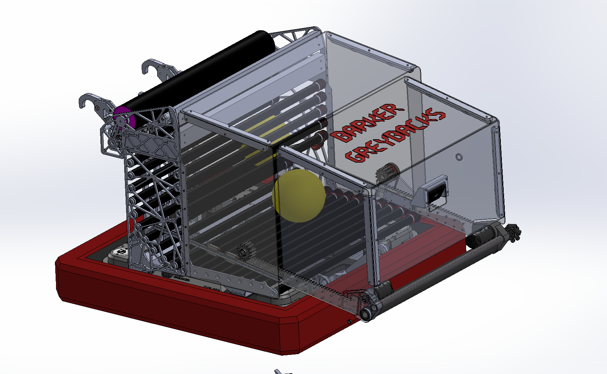
Level 3 Climber
Alongside the scoring mechanism, I prototyped the robot's Level 3 Climber — the highest and most difficult climb tier available, designed to maximise endgame points by lifting the robot fully off the ground onto the top rung.
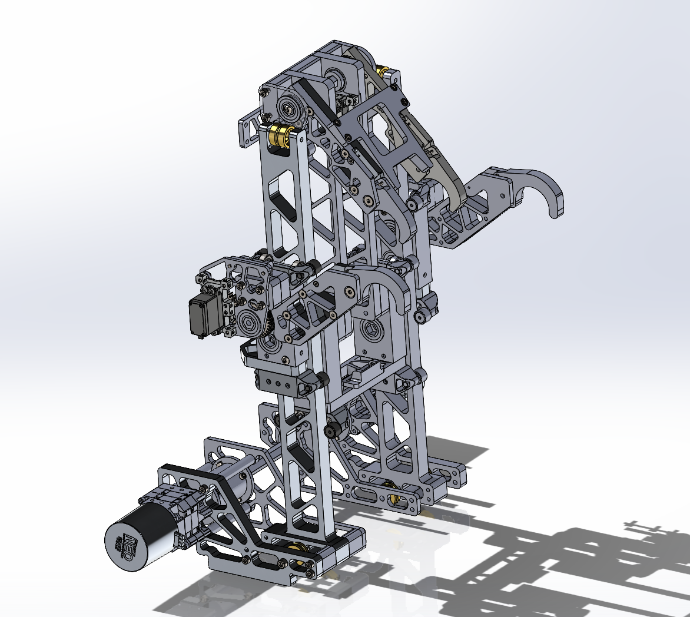
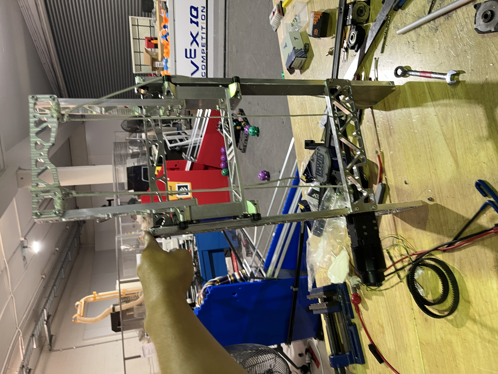
Competition Results
| Statistic | Result |
|---|---|
| Qualification Rank | #8 / 42 |
| Qualification Record | 12–3 |
| Alliance | #1 |
| Alliance Selection | 1st Pick |
| Regional Result | Regional Champion |
| Award | Industrial Design Award |
Alliance
- 5584 ICRobotics - Alliance Captain
- 8613 Barker Greybacks - 1st Pick
- 10552 Mazenod Machinists - 2nd Pick
Playoff Run
| Match | Score | Result |
|---|---|---|
| Round 1 | 360–82 | Win |
| Round 2 | 254–204 | Win |
| Round 4 | 285–170 | Win |
| Final 1 | 365–123 | Win |
| Final 2 | 249–199 | Win |
Outcome
8613 Barker Greybacks became Southern Cross Regional Champions and received the Industrial Design Award.
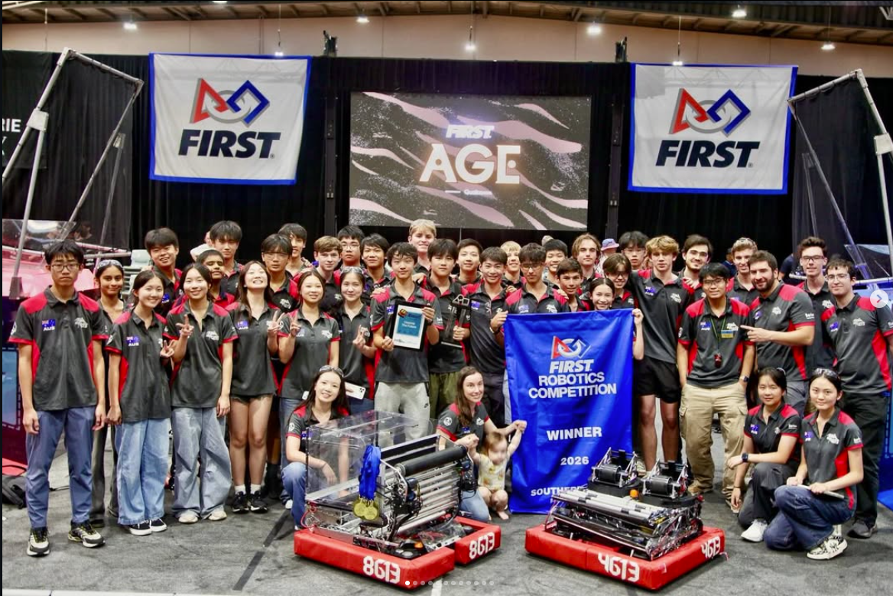
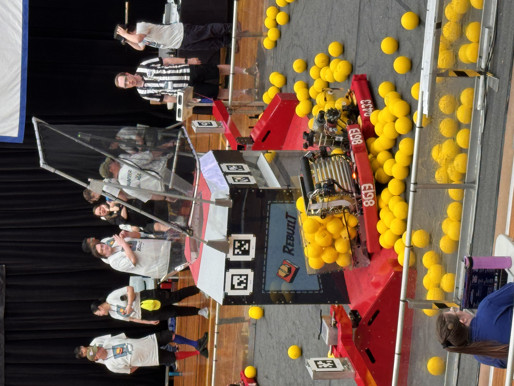
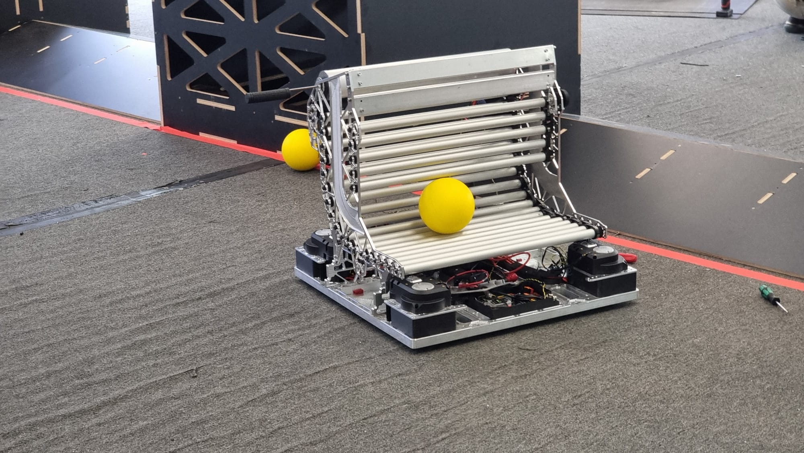
FIRST Championship - Houston
8613 Barker Greybacks - Curie Division
At the FIRST Championship in Houston, 8613 competed in the Curie Division.
My Role
- Team Captain
- Design Lead
- Intake Design
- Assembly, Manufacturing & Repair
- Drive Team Technician
Qualification Results
| Statistic | Result |
|---|---|
| Qualification Rank | #17 / 74 |
| Qualification Record | 10–4 |
| Alliance | #2 |
| Alliance Selection | 2nd Pick |
| Division | Curie |
| Result | Curie Division Champion |
Alliance
- 6800 Valor - Alliance Captain
- 254 Cheesy Poofs - 1st Pick
- 8613 Barker Greybacks - 2nd Pick
- 1714 MORE Robotics - 3rd Pick
Curie Playoffs
| Match | Score | Result |
|---|---|---|
| Round 1 | 764–355 | Win |
| Round 2 | 647–349 | Win |
| Round 4 | 689–778 | Loss |
| Curie Final | 719–550 | Win |
Outcome
8613 won the Curie Division and advanced to the Einstein field.
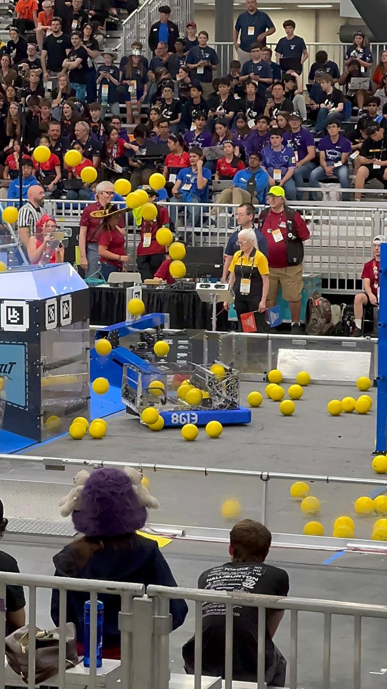
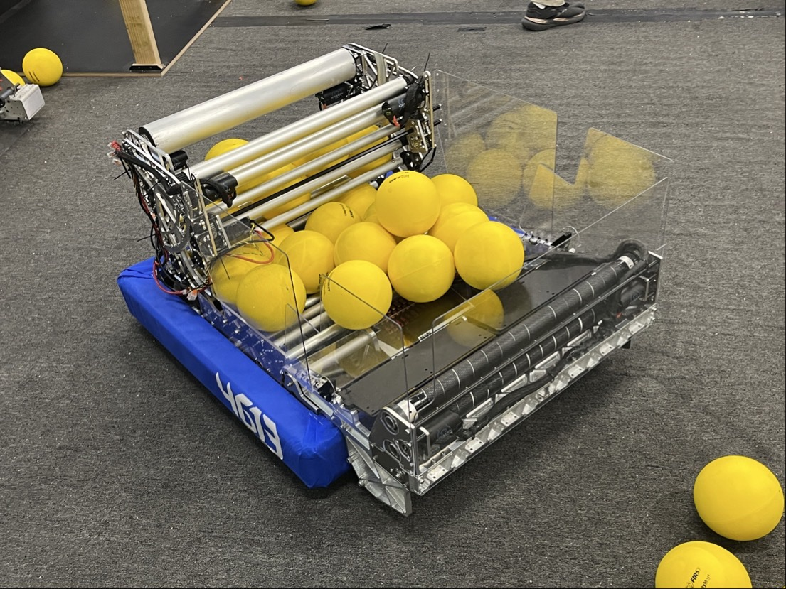
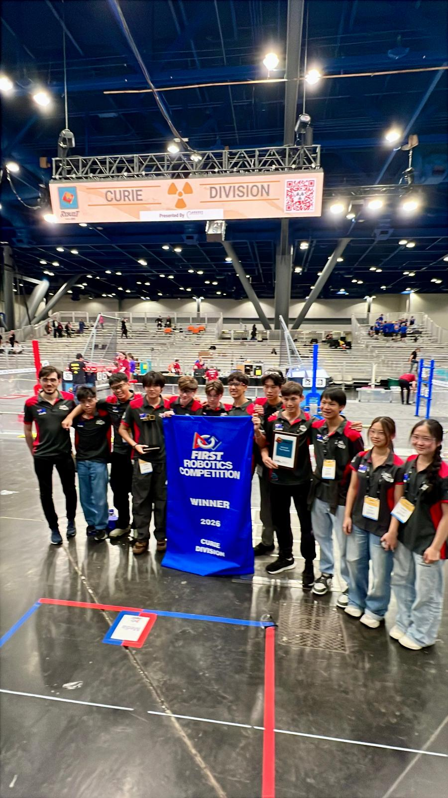
FIRST Championship - 4613 Barker Redbacks
Hopper Division
At Worlds, I also helped design and build 4613 Barker Redbacks.
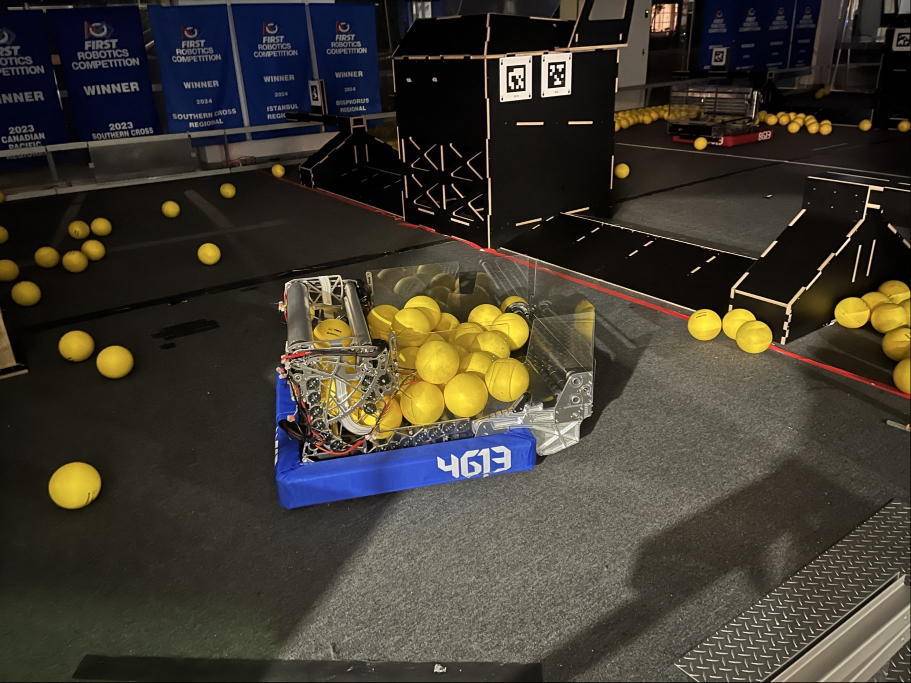
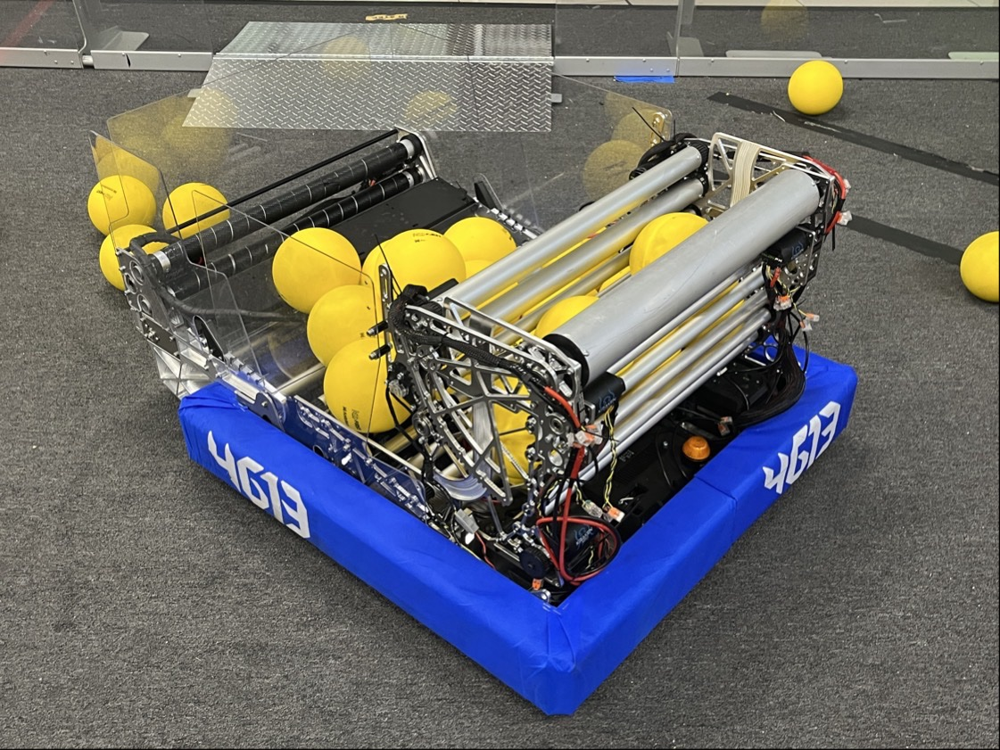
My Role
- Mechanical Designer
- Intake Design
- Ball Hopper Design
- Assembly, Manufacturing & Repair
- Drive Team Technician
4613 entered the Hopper Division ranked #42, but was selected as the 3rd pick of the #1 alliance.
Qualification Results
| Statistic | Result |
|---|---|
| Qualification Rank | #42 / 74 |
| Qualification Record | 5–5 |
| Alliance | #1 |
| Alliance Selection | 3rd Pick |
| Division | Hopper |
| Result | Hopper Division Champion |
| Award | Quality Award |
Alliance
- 2056 OP Robotics - Alliance Captain
- 6329 - 1st Pick
- 3506 - 2nd Pick
- 4613 Barker Redbacks - 3rd Pick
Outcome
Despite entering the division as the #42 seed, 4613 became Hopper Division Champions after being selected onto the #1 alliance.
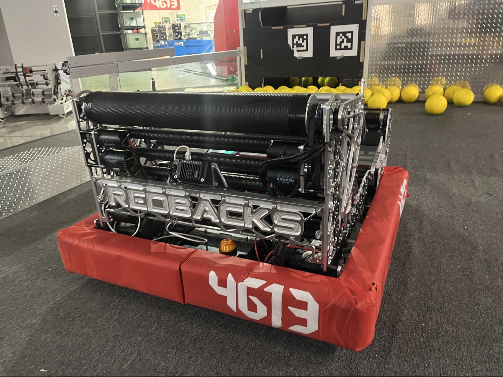
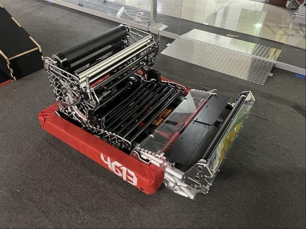
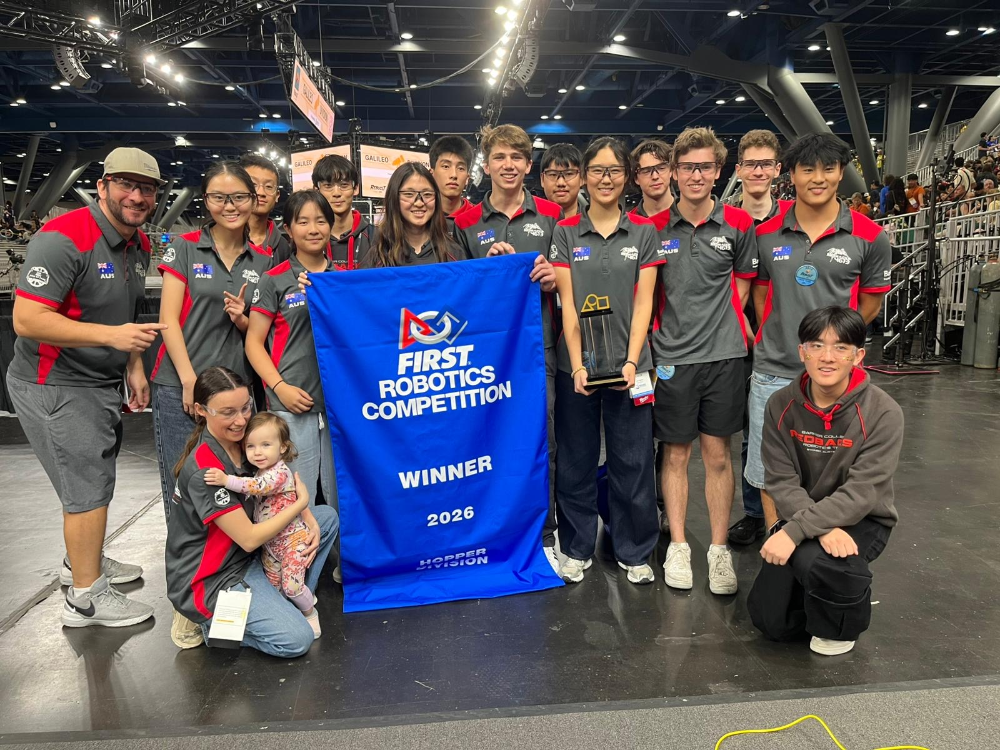
Einstein
8613 Barker Greybacks
Because 8613 won the Curie Division, the alliance advanced to the Einstein field, where the division-winning alliances competed for the overall Championship title.
Einstein Alliance
- 6800 Valor
- 254 Cheesy Poofs
- 8613 Barker Greybacks
- 1714 MORE Robotics
Einstein Results
| Match | Score | Result |
|---|---|---|
| Match 1 | 717–632 | Win |
| Match 2 | 627–713 | Loss |
| Match 3 | 769–638 | Win |
| Match 4 | 699–720 | Loss |
Einstein Record: 2–2
Finish: Eliminated in Round 4
Reaching Einstein was a major milestone. It meant competing directly against the strongest division-winning alliances from across the world.
Duel Down Under
Both Barker FRC Teams
27–28 June 2026
Duel Down Under was a major off-season event where both Barker FRC teams competed together after the FIRST Championship.
Both teams reached the top of the competition, with 4613 winning the event and 8613 reaching the finals.
4613 Barker Redbacks
Event Champions
My Role
- Mechanical Lead
Qualification
#1 Seed
17–0–0
4613 went completely undefeated through qualification.
Alliance
Alliance #1 - Captain
- 4613 Barker Redbacks
- 6510
- 9992
Result
Duel Down Under Champions
The key progression was:
17–0 qualification record #1 seed Alliance Captain Event Champion
8613 Barker Greybacks
Event Finalists
My Role
- Team Captain
- Mechanical Lead
- Human Player
Qualification
#5 Seed
11–6–0
Alliance
Alliance #2
- 9986 - Alliance Captain
- 8613 Barker Greybacks - 1st Pick
- 5876 - 2nd Pick
Result
Duel Down Under Finalist
Finals
| Match | Score | Result |
|---|---|---|
| Final 1 | 309–340 | Loss |
| Final 2 | 323–389 | Loss |
Season Summary
The 2025–26 REBUILT season was particularly significant because I competed with both Barker FRC teams, with both achieving championship-level results.
Southern Cross Regional
8613 Barker Greybacks
- Regional Champion
- Industrial Design Award
- #8 Seed
- 12–3 Qualification Record
- #1 Alliance, 1st Pick
FIRST Championship
8613 Barker Greybacks
- Curie Division Champion
- Einstein Competitor
- 2–2 Einstein Record
- #17 Seed
- 10–4 Qualification Record
4613 Barker Redbacks
- Hopper Division Champion
- Quality Award
- #42 Seed
- 5–5 Qualification Record
- #1 Alliance, 3rd Pick
Duel Down Under
4613 Barker Redbacks
- Event Champion
- #1 Seed
- 17–0 Qualification Record
- Alliance #1 Captain
8613 Barker Greybacks
- Event Finalist
- #5 Seed
- 11–6 Qualification Record
- Alliance #2, 1st Pick
Key Achievements
| Achievement | Team |
|---|---|
| Southern Cross Regional Champion | 8613 |
| Southern Cross Industrial Design Award | 8613 |
| Curie Division Champion | 8613 |
| Einstein Competitor | 8613 |
| Hopper Division Champion | 4613 |
| Quality Award | 4613 |
| Duel Down Under Champion | 4613 |
| Duel Down Under Finalist | 8613 |
| 17–0 Qualification Record | 4613 |
| 2–2 Einstein Record | 8613 |
What This Season Demonstrated
The season gave me experience across two different FRC teams, multiple competitive environments, and multiple engineering responsibilities.
I contributed across the full competition cycle:
Design Prototype Manufacture Assemble Test Repair Compete
More importantly, I experienced the difference between engineering a robot and engineering within a high-performing robotics organisation, where technical decisions have to work under real manufacturing constraints, time pressure, alliance strategy, and competition conditions.